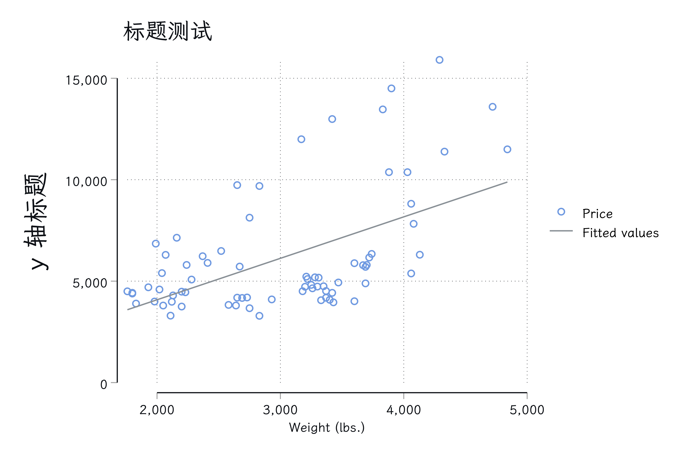
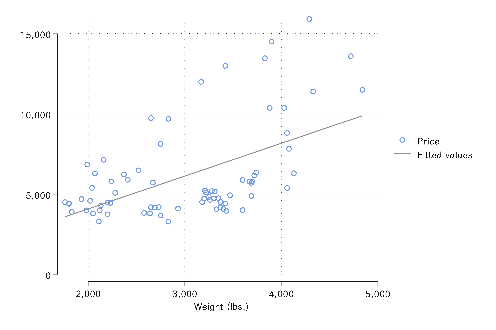
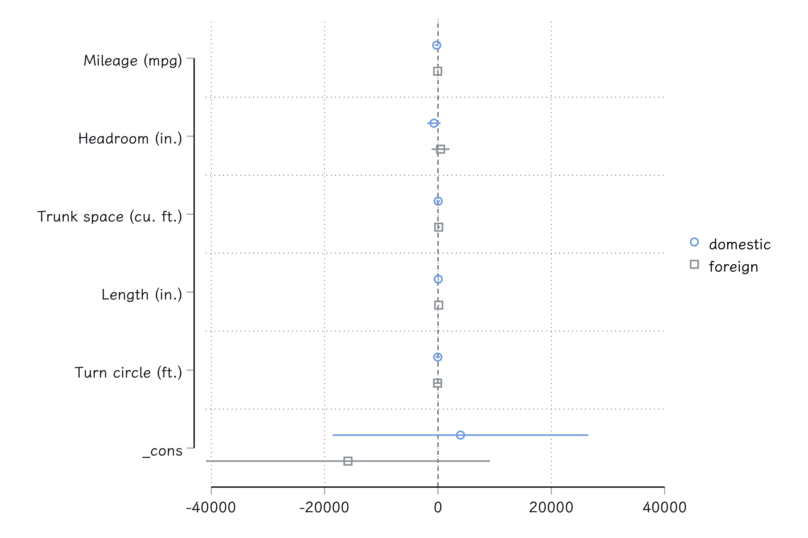
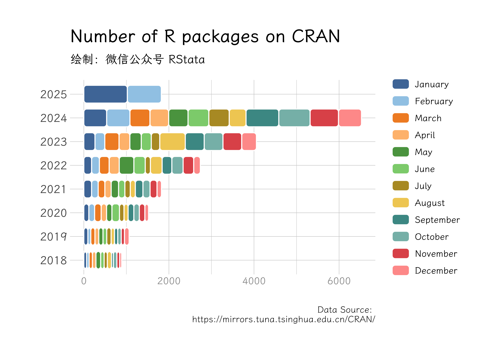

knitsmd: Knit Markdown documents which contains Stata codes

自用 Stata 命令，不一定能在大家的电脑上运行，不过代码还是很值得参考的！
里面调用了我编写的另外一个 R 包，使用前需要安装：
devtools::install_github("r-stata/rstatacreator")欢迎大家关注微信公众号“RStata” 和 “Stata 中文社区” 获取最新资讯和动态！
| RStata | Stata中文社区 |
|---|---|
 |
 |
这篇文档用以测试在 Markdown 文件中插入 Stata
代码，然后进行编译。编译过程中会自动执行代码、保存代码输出结果、保存图片，然后再把结果和图片插入到文档中。不过在这个过程中也要遵循一些基本规则。
Stata 中通常使用 /// 符号进行代码换行，不过也有一些例外，例如编写
program，这种情况需要使用 {stata asis} 来声明代码块，例如：
cap program drop myexp_lf
program myexp_lf
version 14
args lnfj lambda
quietly replace `lnfj' = log(`lambda') - `lambda' * $ML_y1
endinput 输入数据的时候也经常会遇到这个问题：
clear
input y
2.1
2.2
3.1
1.6
2.5
0.5
end整篇文档的代码会被作为一个整体运行，所以不同代码块里面的代码是可以连贯运行的：
ml model lf myexp_lf (y = )
ml maximize, nolog
*> initial: log likelihood = -<inf> (could not be evaluated)
*> feasible: log likelihood = -10.158883
*> rescale: log likelihood = -10.158883
*> Number of obs = 6
*> Wald chi2(0) = .
*> Log likelihood = -10.158883 Prob > chi2 = .
*> ------------------------------------------------------------------------------
*> y | Coefficient Std. err. z P>|z| [95% conf. interval]
*> -------------+----------------------------------------------------------------
*> _cons | .5 .2041241 2.45 0.014 .099924 .900076
*> ------------------------------------------------------------------------------当代码块被声明为 {stata asis}
的时候，这部分代码会直接保存到结果文档中，因此不能把含有结果输出的代码放到这个代码块里面，否则你讲不会得到任何结果输出。
clear
input x1 x2 y
1 0 0
1 1 1
0 0 0
0 1 0
end于是，我们单独放置回归代码，这样才能确保输出结果也保存到结果文档中：
reg y x1 x2
*> Source | SS df MS Number of obs = 4
*> -------------+---------------------------------- F(2, 1) = 1.00
*> Model | .5 2 .25 Prob > F = 0.5774
*> Residual | .25 1 .25 R-squared = 0.6667
*> -------------+---------------------------------- Adj R-squared = 0.0000
*> Total | .75 3 .25 Root MSE = .5
*> ------------------------------------------------------------------------------
*> y | Coefficient Std. err. t P>|t| [95% conf. interval]
*> -------------+----------------------------------------------------------------
*> x1 | .5 .5 1.00 0.500 -5.853102 6.853102
*> x2 | .5 .5 1.00 0.500 -5.853102 6.853102
*> _cons | -.25 .4330127 -0.58 0.667 -5.751948 5.251948
*> ------------------------------------------------------------------------------普通代码块使用 {stata} 直接声明即可。
下面是一段需要执行的代码：
sysuse auto, clear
*> (1978 automobile data)
list price weight rep78 in 1/10
*> +-------------------------+
*> | price weight rep78 |
*> |-------------------------|
*> 1. | 4,099 2,930 3 |
*> 2. | 4,749 3,350 3 |
*> 3. | 3,799 2,640 . |
*> 4. | 4,816 3,250 3 |
*> 5. | 7,827 4,080 4 |
*> |-------------------------|
*> 6. | 5,788 3,670 3 |
*> 7. | 4,453 2,230 . |
*> 8. | 5,189 3,280 3 |
*> 9. | 10,372 3,880 3 |
*> 10. | 4,082 3,400 3 |
*> +-------------------------+不想要执行的代码需要使用 stata 声明：
这是一段不想要被执行的代码，毕竟直接执行会报错！不管是否有图表生成，每个代码块在编译的时候都会被尝试保存图片，因此不要把多个图表生成代码放到一个代码块里面，否则也是会产生错误的结果。
如果该代码块有图表生成，程序会自动把结果插入到结果文档中：
sysuse auto, clear
*> (1978 automobile data)
tw ///
sc price weight || ///
lfit price weight, ///
ti("标题测试") ///
yti("y 轴标题", ///
size(*2))
不使用 /// 进行代码换行也是可以的：
sysuse auto, clear
*> (1978 automobile data)
tw sc price weight || lfit price weight
再例如使用 coefplot 命令绘图：
sysuse auto
*> (1978 automobile data)
regress price mpg headroom trunk ///
length turn if foreign == 0
*> Source | SS df MS Number of obs = 52
*> -------------+---------------------------------- F(5, 46) = 3.90
*> Model | 145742460 5 29148492 Prob > F = 0.0049
*> Residual | 343452340 46 7466355.23 R-squared = 0.2979
*> -------------+---------------------------------- Adj R-squared = 0.2216
*> Total | 489194801 51 9592054.92 Root MSE = 2732.5
*> ------------------------------------------------------------------------------
*> price | Coefficient Std. err. t P>|t| [95% conf. interval]
*> -------------+----------------------------------------------------------------
*> mpg | -218.4576 162.8462 -1.34 0.186 -546.2499 109.3347
*> headroom | -710.5966 579.0558 -1.23 0.226 -1876.176 454.9823
*> trunk | 46.94429 175.9435 0.27 0.791 -307.2117 401.1003
*> length | 46.53995 53.68823 0.87 0.391 -61.52884 154.6087
*> turn | -27.75574 183.0077 -0.15 0.880 -396.1312 340.6197
*> _cons | 3974.614 11204.48 0.35 0.724 -18578.83 26528.06
*> ------------------------------------------------------------------------------
estimates store domestic
regress price mpg headroom trunk length turn if foreign==1
*> Source | SS df MS Number of obs = 22
*> -------------+---------------------------------- F(5, 16) = 8.62
*> Model | 105293573 5 21058714.7 Prob > F = 0.0004
*> Residual | 39069639.5 16 2441852.47 R-squared = 0.7294
*> -------------+---------------------------------- Adj R-squared = 0.6448
*> Total | 144363213 21 6874438.7 Root MSE = 1562.6
*> ------------------------------------------------------------------------------
*> price | Coefficient Std. err. t P>|t| [95% conf. interval]
*> -------------+----------------------------------------------------------------
*> mpg | -60.04633 72.57605 -0.83 0.420 -213.9007 93.80802
*> headroom | 463.4583 742.3428 0.62 0.541 -1110.238 2037.155
*> trunk | 138.7539 122.5353 1.13 0.274 -121.0094 398.5172
*> length | 138.4445 36.53955 3.79 0.002 60.98406 215.9048
*> turn | -67.18482 346.4303 -0.19 0.849 -801.5843 667.2147
*> _cons | -15877.4 11820.27 -1.34 0.198 -40935.26 9180.448
*> ------------------------------------------------------------------------------
estimates store foreign
coefplot domestic foreign, xline(0)
由于一些特殊的原因，代码换行后的缩进建议使用四个空格而非制表符，否则会得到不美观的输出结果。
下面是一段超长的代码输出测试：
di "这是一段无比无比无比长的代码这是一段无比无比无比长的代码这是一段无比无比无比长的代码这是一段无比无比无比长的代码这是一段无比无比无比长的代码这是一段无比无比无比长的代码这是一段无比无比无比长的代码这是一段无比无比无比长的代码这是一段无比无比无比长的代码这是一段无比无比无比长的代码这是一段无比无比无比长的代码这是一段无比无比无比长的代码这是一段无比无比无比长的代码这是一段无比无比无比长的代码这是一段无比无比无比长的代码这是一段无比无比无比长的代码这是一段无比无比无比长的代码这是一段无比无比无比长的代码这是一段无比无比无比长的代码这是一段无比无比无比长的代码"
*> 这是一段无比无比无比长的代码这是一段无比无比无比长的代码这是一段无比无比无比长的代码这是一段无比无比无比长的代码这是一段无比无比无比长的代码这是一段无比无比无比长的代码这是一段无比无比无比长的代码这是一段无比无比无比长的代码这是一段无比无比无比长的代码这是一段无比无比无比长的代码这是一段无比无比无比长的代码这是一段无比无比无比长的代码这是一段无比无比无比长的代码这是一段无比无比无比长的代码这是一段无比无比无比长的代码这是一段无比无比无比长的代码这是一段无比无比无比长的代码这是一段无比无比无比长的代码这是一段无比无比无比长的代码这是一段无比无比无比长的代码也可以得到比较美观的结果。
行内公式使用方法，比如这个化学公式：$a^2 + b^2 = c^2$(\(a^2 + b^2 = c^2\))，也可以用美元符号：$a^2 + b^2 = c^2$($a^2 + b^2 = c^2$)
块公式使用方法如下：
$$H(D_2) = -\left(\frac{2}{4}\log_2 \frac{2}{4} + \frac{2}{4}\log_2 \frac{2}{4}\right) = 1$$
矩阵：
$$
\begin{pmatrix}
1 & a_1 & a_1^2 & \cdots & a_1^n \
1 & a_2 & a_2^2 & \cdots & a_2^n \
\vdots & \vdots & \vdots & \ddots & \vdots \
1 & a_m & a_m^2 & \cdots & a_m^n \
\end{pmatrix}
$$
块公式用 $$ ... $$ 也是可以的。
由于该程序是使用 RMarkdown 进行编译的，所以 R 语言的代码也可以用于其中：
# 设置字体
library(showtext)
showtext_auto(enable = TRUE)
font_add("cnfont", bold = "~/Library/Fonts/LXGWWenKai-Medium.ttf",
regular = "~/Library/Fonts/LXGWWenKai-Regular.ttf",
italic = "~/Library/Fonts/LXGWWenKai-Light.ttf")
font_add("enfont", regular = "/Users/ac/Documents/font/CascadiaCode-Regular-VTT.ttf")
library(rvest)
library(tidyverse)
# lubridate 是处理日期的一个 R 包
library(lubridate)
library(hrbrthemes)
# 需要耐心地等待一会儿
pkg <- "https://mirrors.tuna.tsinghua.edu.cn/CRAN/web/packages/available_packages_by_date.html" %>%
read_html() %>%
html_table() %>%
.[[1]] %>%
as_tibble() %>%
mutate(
Date = ymd(Date),
Year = year(Date),
Month = month(Date)
)
library(ggchicklet)
pkg %>%
subset(Year > year(today()) - 8) %>%
group_by(Year, Month) %>%
count() %>%
ggplot(aes(x = factor(Year), y = n)) +
geom_chicklet(aes(fill = factor(Month)),
width = 0.75,
radius = grid::unit(3, "pt")) +
coord_flip() +
scale_fill_manual(name = "Month",
values = c("#4E79A7FF", "#A0CBE8FF",
"#F28E2BFF", "#FFBE7DFF",
"#59A14FFF", "#8CD17DFF",
"#B6992DFF", "#F1CE63FF",
"#499894FF", "#86BCB6FF",
"#E15759FF", "#FF9D9AFF"),
breaks = 1:12,
labels = month.name) +
theme_ipsum(base_family = "cnfont") +
theme(axis.text.x = element_text(color = "gray60",
size = 10)) +
theme(legend.position = "right",
legend.title = element_blank(),
legend.box.background = element_blank(),
legend.background = element_blank(),
panel.background = element_blank()) +
guides(fill = guide_legend(ncol = 1)) +
labs(
title = "Number of R packages on CRAN",
subtitle = "绘制：微信公众号 RStata",
caption = "Data Source: \nhttps://mirrors.tuna.tsinghua.edu.cn/CRAN/",
x = "",
y = "") 